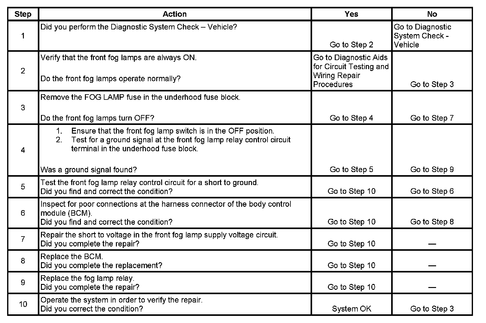

Operation CHARM
: Car repair manuals for everyone.
Home
>>
Cadillac
>>
2007
>>
Escalade ESV AWD V8-6.2L
>>
Repair and Diagnosis
>>
Lighting and Horns
>>
Testing and Inspection
>>
Symptom Related Diagnostic Procedures
>>
Fog Lamps Always On
Fog Lamps Always On
Step 1 - Step 10:
